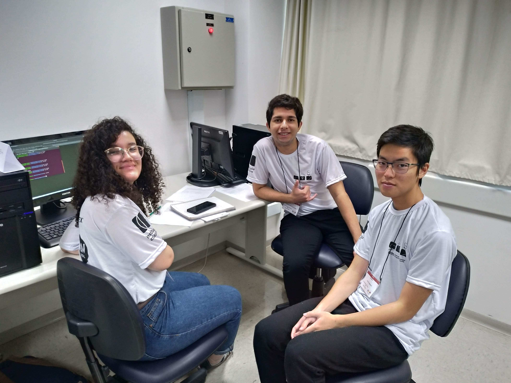

Regional 2019
No dia 14 de Setembro de 2019 ocorreu a 24a. edição da Maratona SBC de Programação. Junto com ela veio uma ótima notícia: conseguimos classificar uma equipe para a etapa Final Brasileira, que acontecerá na Paraíba!!
Nessa primeira fase participaram mais de 700 equipes ao longo de todo o Brasil, sendo classificadas aproximadamente 70 delas para a etapa Nacional, que acontecerá em Campina Grande - Paraíba.
Equipes participantes
buiatchaka

Time formado por Jonatas, Wesley e Bryan.
Realizando 7 problemas, com 1087 de penalidade, obtiveram 36a. colocação no Brasil e a 4a. colocação na sede de São Paulo (nossa melhor posição até hoje), classificando-se para a Final Brasileira em Campina Grande - Paraíba.
Stranger Strings

Time formado por Robert, Pedro e Daniel.
Realizando 2 problemas, com 46 de penalidade, obtiveram 176a. colocação no Brasil e a 8a. colocação na sede de São Paulo.
C_MinusMinus

Time formado por William, Dimitri e Matheus.
Realizando 2 problemas, com 74 de penalidade, obtiveram 248a. colocação no Brasil e a 10a. colocação na sede de São Paulo.
Balão Mágico

Time formado por Leonardo, Edson e Pedro.
Realizando 2 problemas, com 113 de penalidade, obtiveram 345a. colocação no Brasil e a 12a. colocação na sede de São Paulo.
Coda Raul

Time formado por Filipe, Igor e Bryan.
Realizando 2 problemas, com 178 de penalidade, obtiveram 401a. colocação no Brasil e a 16a. colocação na sede de São Paulo.
Quero Café++

Time formado por Nathalia, Thales e André.
Realizando 2 problemas, com 316 de penalidade, obtiveram 475a. colocação no Brasil e a 19a. colocação na sede de São Paulo.
Agradecimentos
Todas as equipes estão de parabéns! Um muito obrigado a todos que participaram e um agradecimento especial à nossa treinadora, a Profa. Dra. Cristiane Sato, ela é demais!